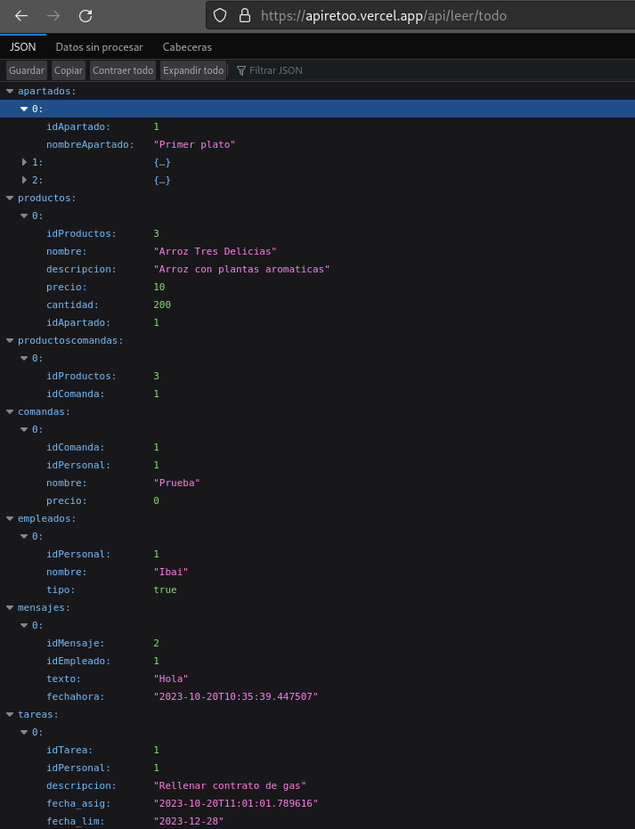

Esta API Restful creada en Node.js utilizando Express se comunica con la base de datos y las aplicaciones. Para acceder a las funciones de la API, tus aplicaciones deben realizar solicitudes HTTP a este servidor, agregando el directorio /api/ y la ruta a la función deseada.
Ruta para obtener datos de la tabla "Apartados" en la base de datos.
GET /api/leer/apartados
Ruta para obtener datos de la tabla "Comandas" en la base de datos.
GET /api/leer/comandas
Ruta para obtener datos de la tabla "Empleados" en la base de datos.
GET /api/leer/empleados
Ruta para obtener datos de la tabla "Productos" en la base de datos.
GET /api/leer/productos
Ruta para obtener datos de la tabla "Tareas" en la base de datos.
GET /api/leertareas
Ruta para obtener datos de múltiples tablas en la base de datos, incluyendo "Apartados", "Comandas", "Empleados", "Productos", "Tareas".
GET /api/leer/todo